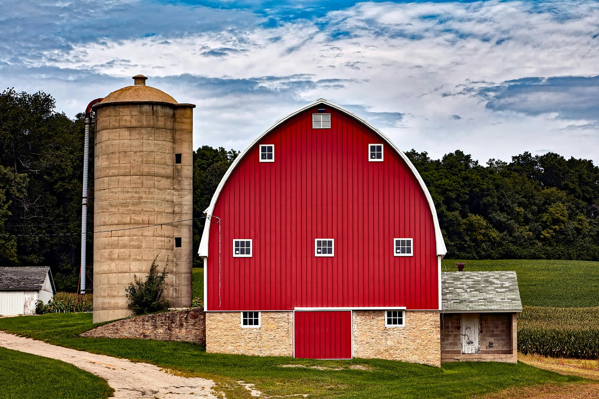
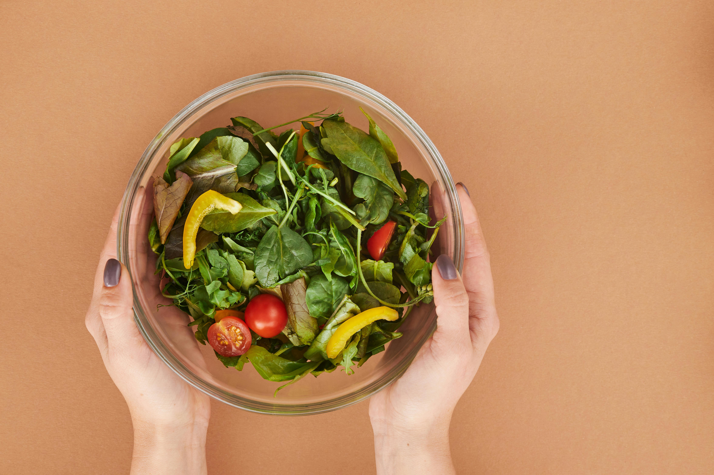
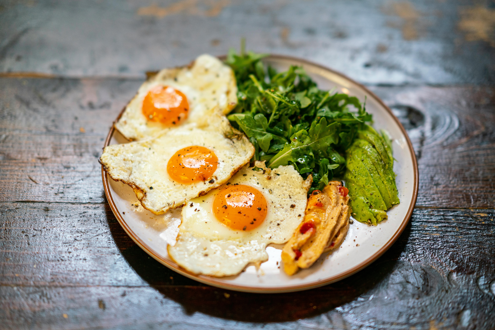

Onze lokale leveranciers
We werken samen met lokale boeren en producenten om de versheid en duurzaamheid te garanderen.


We werken samen met lokale boeren en producenten om de versheid en duurzaamheid te garanderen.

Door seizoensgroenten te gebruiken verminderen we verspilling en bieden we de beste smaak aan onze gasten.

We kiezen voor biologische producten, zero-waste kooktechnieken en duurzame verpakkingen.